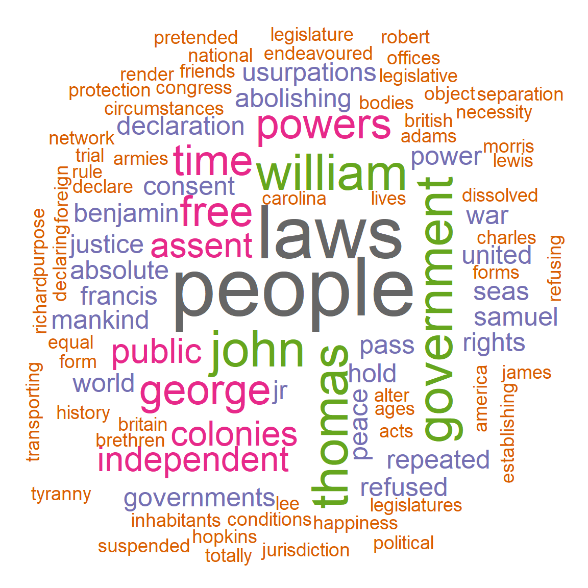
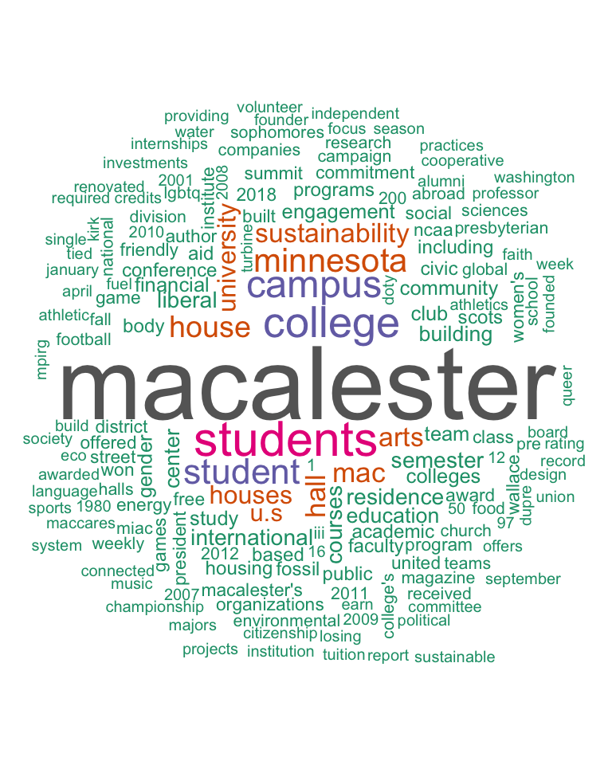
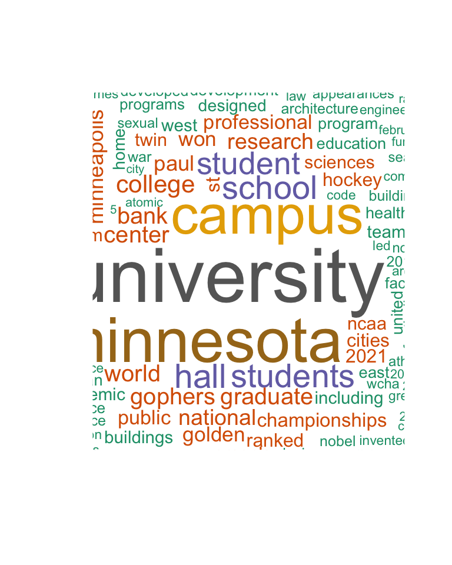
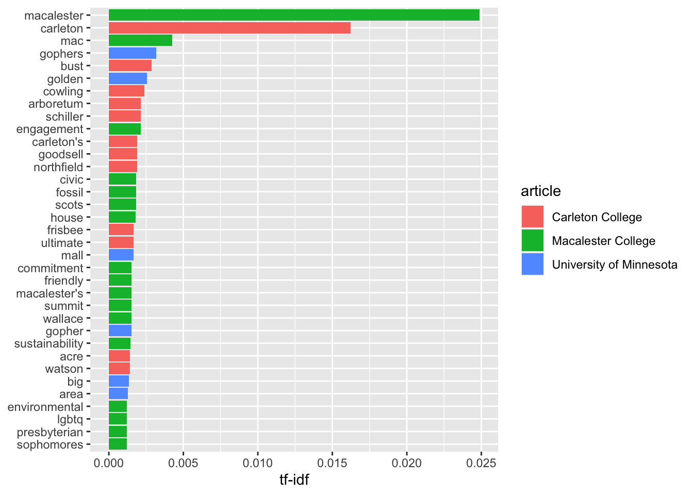
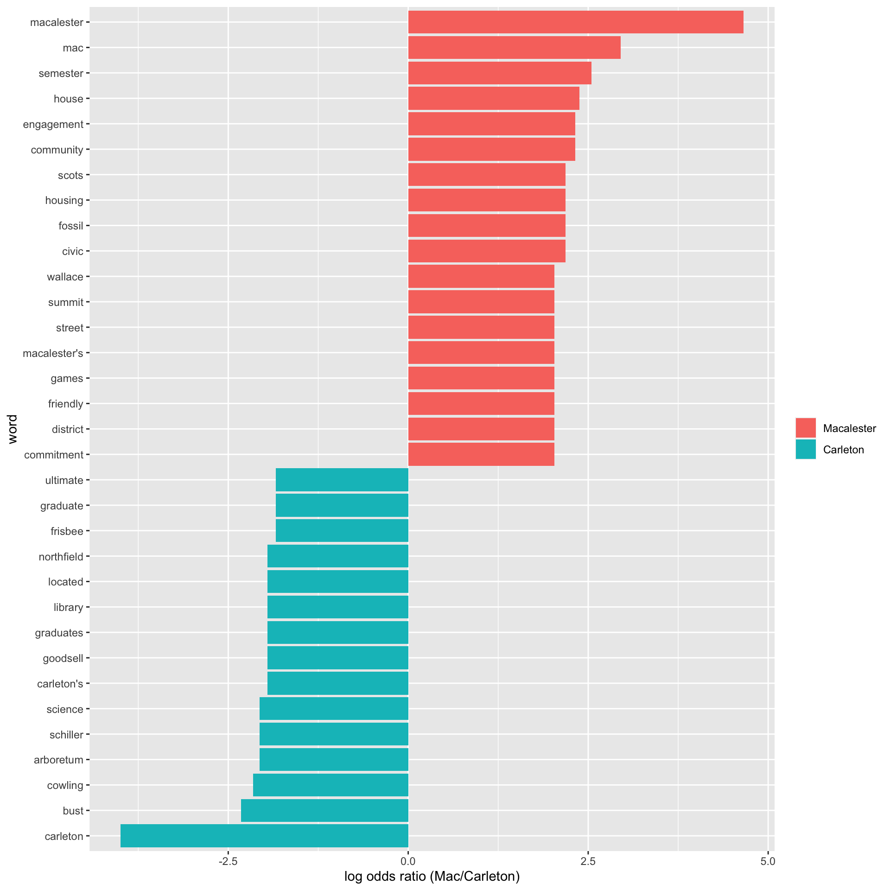

Text Analysis
Learning Goals
- Understand the analysis process of decomposing text into tokens and considering word/token frequency
- Develop comfort in comparing the text across multiple documents in terms of tf-idf and log odds ratio
- Develop comfort in using lexicons to perform sentiment analysis on a document of text
Introduction to Text Analysis in R
We have seen how to manipulate strings with regular expressions. Here, we examine how to analyze longer text documents. Text refers to information composed primarily of words: song lyrics, Tweets, news articles, novels, Wikipedia articles, online forums, and countless other resources.
In R and most other programming languages, text is stored in strings of characters.
There are a variety of common ways to get strings containing the text we want to analyze.
Text Acquisition
String Literals
It may be natural to start by declaring an R variable that holds a string. Let’s consider the U.S. Declaration of Independence.
Here’s an R variable that contains one of the most memorable sentences in the Declaration of Independence:
us_dec_sentence <- "We hold these truths to be self-evident, that all men are created equal, that they are endowed by their Creator with certain unalienable Rights, that among these are Life, Liberty and the pursuit of Happiness."
# Show the number of characters in the sentence.
nchar(us_dec_sentence)## [1] 209# Show the sentence itself.
us_dec_sentence## [1] "We hold these truths to be self-evident, that all men are created equal, that they are endowed by their Creator with certain unalienable Rights, that among these are Life, Liberty and the pursuit of Happiness."Unfortunately, creating literal string variables like this can become unwieldy for larger texts, or collections of multiple texts.
Using this technique, your R program would be narrowly written to analyze hard-coded string variables, and defining those string variables may take up the vast majority of our program’s source code, making it difficult to read.
We will discuss two more flexible ways of getting textual data: reading a .TXT file and accessing a web API.
Reading .txt Files
The simplest file format for text is a .TXT (or .txt) file. A .txt file contains raw textual data. You can find .txt files by using Google’s filetype: search filter.
Go to http://google.com and type filetype:txt declaration of independence in the search box.
In the results you should see many .txt files containing the U.S. Declaration of Independence.
For example, https://infamous.net/documents/declaration-of-independence.txt. We can read this .txt file into R as a string using the readr package.29
Because the text is so large, we use the strtrim function to only show the first 500 characters of the text.
library(readr)
us_dec <- read_file("https://infamous.net/documents/declaration-of-independence.txt")
nchar(us_dec)## [1] 9841strtrim(us_dec, 500)## [1] "\n\nTHE DECLARATION OF INDEPENDENCE:\n\n\nIn Congress, July 4, 1776,\nTHE UNANIMOUS DECLARATION OF THE THIRTEEN UNITED STATES OF AMERICA\n\nWhen in the Course of human events, it becomes necessary for one \npeople to dissolve the political bands which have connected them \nwith another, and to assume among the Powers of the earth, the \nseparate and equal station to which the Laws of Nature and of \nNature's God entitle them, a decent respect to the opinions of \nmankind requires that they should declare the causes which"Notice all those \n sequences that appear in the string.
These are newline characters that denote the end of a line.
There are a few other special characters that you may see. For example, '\t' is a tab.
Using Web APIs
When we want to analyze textual data created on websites or mobile apps such as Facebook and Twitter, we can use web APIs to gather the text. Here is one example from the largest single collection of written knowledge in human history: Wikipedia!
The function below retrieves the text content of a Wikipedia article with a particular title. It uses Wikipedia’s Public API to do so, which enables any computer program to interact with Wikipedia. Wikipedia’s API is convenient for us because it is vast, open, and free. Don’t worry if you don’t follow the details of the code below.
GetArticleText <- function(langCode, titles) {
# Returns the text of the specified article in the specified language
# An accumulator variable that will hold the text of each article
# Create
texts <- sapply(titles, function(t) {
print(t)
article_info <- getForm(
paste("https://", langCode, ".wikipedia.org/w/api.php", sep = ""),
action = "query",
prop = "extracts",
format = "json",
explaintext = "",
titles = t
)
js <- fromJSON(article_info)
return(js$query$pages[[1]]$extract)
})
return(texts)
}
# Get the text for https://en.wikipedia.org/wiki/Macalester_College,
# https://en.wikipedia.org/wiki/Carleton_College, and https://en.wikipedia.org/wiki/University_of_Minnesota in English ("en").
# We could also get the text for the Spanish article ("es"), or German article ("de")
school_wiki_titles <- c("Macalester College", "Carleton College", "University of Minnesota")
school_wiki_text <- GetArticleText("en", school_wiki_titles)## [1] "Macalester College"
## [1] "Carleton College"
## [1] "University of Minnesota"# Print out the first 500 characters of the text
strtrim(school_wiki_text, 500)## Macalester College
## "Macalester College () is a private liberal arts college in Saint Paul, Minnesota. Founded in 1874, Macalester is exclusively an undergraduate four-year institution and enrolled 2,174 students in the fall of 2018 from 50 U.S. states, four U.S territories, the District of Columbia and 97 countries. The college has Scottish roots and emphasizes internationalism and multiculturalism.\n\n\n== History ==\nMacalester College was founded by Rev. Dr. Edward Duffield Neill in 1874 with help from the Presbyterian "
## Carleton College
## "Carleton College ( KARL-tin) is a private liberal arts college in Northfield, Minnesota. Founded in 1866, it had 2,105 undergraduate students and 269 faculty members in fall 2016. The 200-acre main campus is between Northfield and the 800-acre Cowling Arboretum, which became part of the campus in the 1920s.Admissions is highly selective with an acceptance rate of 16.5% in 2022, and Carleton is annually ranked near the top in most rankings of liberal arts schools. Carleton is particularly renowne"
## University of Minnesota
## "The University of Minnesota, formally the University of Minnesota, Twin Cities, (UMN, the U of M, or Minnesota) is a public land-grant research university in the Twin Cities of Minneapolis and Saint Paul, Minnesota, United States. The Twin Cities campus comprises locations in Minneapolis and Falcon Heights, a suburb of St. Paul, approximately 3 miles (4.8 km) apart. The Twin Cities campus is the oldest and largest in the University of Minnesota system and has the ninth-largest main campus studen"We’ll analyze these documents further below.
Analyzing Single Documents
If we tried to make a data frame directly out of the text, it would look odd. It contains the text as a single row in a column named “text.” This doesn’t seem any more useful than the original string itself.
us_dec_df <- tibble(title = "Declaration of Independence", text = us_dec)
us_dec_df## # A tibble: 1 × 2
## title text
## <chr> <chr>
## 1 Declaration of Independence "\n\nTHE DECLARATION OF INDEPENDENCE:\n\n\nIn Congress, July 4…Unnesting Tokens
We need to restructure the text into components that can be easily analyzed.
We will use two units of data:
- A token is the smallest textual information unit we wish to measure, typically a word.
- A document is a collection of tokens.
For our example here, the Declaration of Independence is the document, and a word is the token. However, a document could be a tweet, a novel chapter, a Wikipedia article, or anything else that seems interesting. Other possibilities for tokens include sentences, lines, paragraphs, characters, ngrams, and more.30
Later on, we will also give an example of how to perform textual analyses comparing two or more documents.
We will be using the tidy text format, which has one row for each unit of analysis. Our work will focus on word-level analysis within each document, so each row will contain a document and word.
TidyText’s unnest_tokens function takes a data frame containing one row per document and breaks it into a data frame containing one row per token.
tidy_us_dec <- us_dec_df %>%
unnest_tokens(word, text)
tidy_us_dec## # A tibble: 1,539 × 2
## title word
## <chr> <chr>
## 1 Declaration of Independence the
## 2 Declaration of Independence declaration
## 3 Declaration of Independence of
## 4 Declaration of Independence independence
## 5 Declaration of Independence in
## 6 Declaration of Independence congress
## 7 Declaration of Independence july
## 8 Declaration of Independence 4
## 9 Declaration of Independence 1776
## 10 Declaration of Independence the
## # … with 1,529 more rowsNote that because we only have one document, the initial data frame (us_dec_df) is just one row and the tidy text data frame (tidy_us_dec) has the same title for each row.
Later on we will analyze more than one document and these columns can change.
We can now analyze this tidy text data frame. For example, we can determine the total number of words.
nrow(tidy_us_dec)## [1] 1539We can also find the most frequently used words by using dplyr’s count function, which creates a frequency table for (in our case) words:
# Create and display frequency count table
all_us_dec_counts <- tidy_us_dec %>%
count(word, sort = TRUE)
all_us_dec_counts## # A tibble: 674 × 2
## word n
## <chr> <int>
## 1 the 84
## 2 of 83
## 3 to 67
## 4 and 58
## 5 for 28
## 6 our 26
## 7 has 20
## 8 in 20
## 9 their 20
## 10 he 19
## # … with 664 more rowsWe can count the rows in this data frame to determine how many different unique words appear in the document.
nrow(all_us_dec_counts)## [1] 674Stop Words
Notice that the most frequent words are common words that are present in any document and not particularly descriptive of the topic of the document. These common words are called stop words, and they are typically removed from textual analysis.
TidyText provides a built in set of 1,149 different stop words.
We can load the dataset and use anti_join to remove rows associated with words in the dataset.
# Load stop words dataset and display it
data(stop_words)
stop_words## # A tibble: 1,149 × 2
## word lexicon
## <chr> <chr>
## 1 a SMART
## 2 a's SMART
## 3 able SMART
## 4 about SMART
## 5 above SMART
## 6 according SMART
## 7 accordingly SMART
## 8 across SMART
## 9 actually SMART
## 10 after SMART
## # … with 1,139 more rows# Create and display frequency count table after removing stop words from the dataset
us_dec_counts <- tidy_us_dec %>%
anti_join(stop_words) %>%
count(word, sort = TRUE)
us_dec_counts## # A tibble: 525 × 2
## word n
## <chr> <int>
## 1 people 10
## 2 laws 9
## 3 government 6
## 4 john 6
## 5 thomas 6
## 6 william 6
## 7 free 5
## 8 george 5
## 9 powers 5
## 10 time 5
## # … with 515 more rowsWord Clouds
A word cloud is a visualization of the most frequent words in the dataset:
library(wordcloud)
# Show a word cloud with some customized options
wordcloud(us_dec_counts$word, # column of words
us_dec_counts$n, # column of frequencies
scale = c(5, 0.2), # range of font sizes of words
min.freq = 2, # minimum word frequency to show
max.words = 200, # show the 200 most frequent words
random.order = FALSE, # position the most popular words first
colors = brewer.pal(8, "Dark2") # color palette
) 
Comparing the text in two (or more) documents
Let’s now create a TidyText data frame with the three Wikipedia documents we collected above via the API. Remember that the TidyText data frame has one row for each word.
# Create the three-row original data frame
text_df <- tibble(article = school_wiki_titles, text = school_wiki_text)
text_df## # A tibble: 3 × 2
## article text
## <chr> <chr>
## 1 Macalester College "Macalester College () is a private liberal arts college in Saint …
## 2 Carleton College "Carleton College ( KARL-tin) is a private liberal arts college in…
## 3 University of Minnesota "The University of Minnesota, formally the University of Minnesota…# Unnest the data frame so each row corresponds to a single word in a single document.
tidy_df <- text_df %>%
unnest_tokens(word, text)
tidy_df## # A tibble: 15,516 × 2
## article word
## <chr> <chr>
## 1 Macalester College macalester
## 2 Macalester College college
## 3 Macalester College is
## 4 Macalester College a
## 5 Macalester College private
## 6 Macalester College liberal
## 7 Macalester College arts
## 8 Macalester College college
## 9 Macalester College in
## 10 Macalester College saint
## # … with 15,506 more rowsSide-by-Side Word Clouds
macalester_counts <- tidy_df %>%
filter(article == "Macalester College") %>%
anti_join(stop_words) %>%
count(word, sort = TRUE)
macalester_counts## # A tibble: 1,200 × 2
## word n
## <chr> <int>
## 1 macalester 82
## 2 students 33
## 3 college 28
## 4 campus 24
## 5 student 21
## 6 minnesota 19
## 7 house 16
## 8 hall 14
## 9 mac 14
## 10 arts 13
## # … with 1,190 more rowsumn_counts <- tidy_df %>%
filter(article == "University of Minnesota") %>%
anti_join(stop_words) %>%
count(word, sort = TRUE)
umn_counts## # A tibble: 1,911 × 2
## word n
## <chr> <int>
## 1 university 98
## 2 minnesota 79
## 3 campus 68
## 4 hall 36
## 5 school 35
## 6 students 35
## 7 student 33
## 8 college 23
## 9 bank 21
## 10 center 21
## # … with 1,901 more rowscarleton_counts <- tidy_df %>%
filter(article == "Carleton College") %>%
anti_join(stop_words) %>%
count(word, sort = TRUE)
carleton_counts## # A tibble: 1,406 × 2
## word n
## <chr> <int>
## 1 carleton 68
## 2 college 42
## 3 students 39
## 4 hall 26
## 5 campus 20
## 6 national 17
## 7 student 17
## 8 arts 14
## 9 built 13
## 10 liberal 13
## # … with 1,396 more rowswordcloud(macalester_counts$word, macalester_counts$n,
max.words = 200, random.order = FALSE, colors = brewer.pal(8, "Dark2")
)
wordcloud(umn_counts$word, umn_counts$n,
max.words = 200, random.order = FALSE, colors = brewer.pal(8, "Dark2")
)
wordcloud(carleton_counts$word, carleton_counts$n,
max.words = 200, random.order = FALSE, colors = brewer.pal(8, "Dark2")
)
Brainstorm
How do we compare multiple documents quantitatively?
Exercise 14.32 Brainstorm a metric for comparing the relative frequency/importance of different words in two or more documents. What factors might you account for?
Term Frequency - Inverse Document Frequency
To compare the prevalence of certain words in one document relative to another document, we could just count the occurrences. However, the documents may be different lengths, meaning that many more words might occur more often in the longer document. There are different ways to account for this, but one of the most common is term frequency - inverse document frequency.
- The term frequency aims to capture how frequently a word appears in each document. There are different ways to measure this, including a raw count, logarithmically scaled (1 + log of the raw count), or Boolean (either 1 or 0 depending on whether the word occurs).
- The inverse document frequency aims to capture how common the word is across documents. It is \[\log\left(\frac{N}{|\{doc: word \in doc\}|}\right),\] where \(N\) is the number of documents, and the denominator of the fraction is the number of documents in which the selected word appears. Thus, if the word appears in all documents under consideration, the idf score is equal to log(1)=0.
- The td-idf score is then the product of the term frequency and the inverse document frequency.
We’ll use the bind_tf_idf command from the tidytext library. Its default measure for term frequency is the raw count of a given word divided by the total number of words in the document. Let’s start by computing the thirty-five document-word pairs with the highest tf-idf scores:
tfidf_analysis <- tidy_df %>%
count(article, word) %>%
bind_tf_idf(word, article, n) %>%
arrange(desc(tf_idf))| article | word | n | tf | idf | tf_idf |
|---|---|---|---|---|---|
| Macalester College | macalester | 82 | 0.0226582 | 1.0986123 | 0.0248926 |
| Carleton College | carleton | 68 | 0.0147698 | 1.0986123 | 0.0162262 |
| Macalester College | mac | 14 | 0.0038685 | 1.0986123 | 0.0042500 |
| University of Minnesota | gophers | 21 | 0.0028795 | 1.0986123 | 0.0031634 |
| Carleton College | bust | 12 | 0.0026064 | 1.0986123 | 0.0028635 |
| University of Minnesota | golden | 17 | 0.0023310 | 1.0986123 | 0.0025609 |
| Carleton College | cowling | 10 | 0.0021720 | 1.0986123 | 0.0023862 |
| Carleton College | arboretum | 9 | 0.0019548 | 1.0986123 | 0.0021476 |
| Carleton College | schiller | 9 | 0.0019548 | 1.0986123 | 0.0021476 |
| Macalester College | engagement | 7 | 0.0019342 | 1.0986123 | 0.0021250 |
| Carleton College | carleton’s | 8 | 0.0017376 | 1.0986123 | 0.0019090 |
| Carleton College | goodsell | 8 | 0.0017376 | 1.0986123 | 0.0019090 |
| Carleton College | northfield | 8 | 0.0017376 | 1.0986123 | 0.0019090 |
| Macalester College | civic | 6 | 0.0016579 | 1.0986123 | 0.0018214 |
| Macalester College | fossil | 6 | 0.0016579 | 1.0986123 | 0.0018214 |
| Macalester College | scots | 6 | 0.0016579 | 1.0986123 | 0.0018214 |
| Macalester College | house | 16 | 0.0044211 | 0.4054651 | 0.0017926 |
| Carleton College | frisbee | 7 | 0.0015204 | 1.0986123 | 0.0016703 |
| Carleton College | ultimate | 7 | 0.0015204 | 1.0986123 | 0.0016703 |
| University of Minnesota | mall | 11 | 0.0015083 | 1.0986123 | 0.0016570 |
| Macalester College | commitment | 5 | 0.0013816 | 1.0986123 | 0.0015178 |
| Macalester College | friendly | 5 | 0.0013816 | 1.0986123 | 0.0015178 |
| Macalester College | macalester’s | 5 | 0.0013816 | 1.0986123 | 0.0015178 |
| Macalester College | summit | 5 | 0.0013816 | 1.0986123 | 0.0015178 |
| Macalester College | wallace | 5 | 0.0013816 | 1.0986123 | 0.0015178 |
| University of Minnesota | gopher | 10 | 0.0013712 | 1.0986123 | 0.0015064 |
| Macalester College | sustainability | 13 | 0.0035922 | 0.4054651 | 0.0014565 |
| Carleton College | acre | 6 | 0.0013032 | 1.0986123 | 0.0014317 |
| Carleton College | watson | 6 | 0.0013032 | 1.0986123 | 0.0014317 |
| University of Minnesota | big | 9 | 0.0012341 | 1.0986123 | 0.0013558 |
| University of Minnesota | area | 23 | 0.0031537 | 0.4054651 | 0.0012787 |
| Macalester College | environmental | 4 | 0.0011053 | 1.0986123 | 0.0012143 |
| Macalester College | lgbtq | 4 | 0.0011053 | 1.0986123 | 0.0012143 |
| Macalester College | presbyterian | 4 | 0.0011053 | 1.0986123 | 0.0012143 |
| Macalester College | sophomores | 4 | 0.0011053 | 1.0986123 | 0.0012143 |
Here is a graphic with the same data:
tfidf_analysis %>%
mutate(word = factor(word, levels = rev(unique(word)))) %>%
top_n(35) %>%
ggplot(aes(word, tf_idf, fill = article)) +
geom_col() +
labs(x = NULL, y = "tf-idf") +
coord_flip()
Next, let’s say we want to determine which school is the most relevant to the query “internationalism, multiculturalism, and service to society.”
target_words <- c("internationalism", "multiculturalism", "service", "society")
mission <- tfidf_analysis %>%
filter(word %in% target_words)| article | word | n | tf | idf | tf_idf |
|---|---|---|---|---|---|
| Macalester College | society | 3 | 0.0008290 | 0.4054651 | 0.0003361 |
| Macalester College | internationalism | 1 | 0.0002763 | 1.0986123 | 0.0003036 |
| Macalester College | multiculturalism | 1 | 0.0002763 | 1.0986123 | 0.0003036 |
| Carleton College | society | 1 | 0.0002172 | 0.4054651 | 0.0000881 |
| Carleton College | service | 4 | 0.0008688 | 0.0000000 | 0.0000000 |
| Macalester College | service | 1 | 0.0002763 | 0.0000000 | 0.0000000 |
| University of Minnesota | service | 9 | 0.0012341 | 0.0000000 | 0.0000000 |
Log Odds Ratio
Another metric for comparing the frequency of different words in two documents is the log odds ratio:
\[\log\left(\frac{\left(\frac{n+1}{total+1}\right)_{\hbox{doc1}}}{\left(\frac{n+1}{total+1}\right)_{\hbox{doc2}}} \right),\] where \(n\) is the number of times the word appears and \(total\) is the total number of words in the document.
total.mac <- nrow(filter(tidy_df, article == "Macalester College"))
total.carleton <- nrow(filter(tidy_df, article == "Carleton College"))
logratios <- macalester_counts %>%
full_join(carleton_counts, by = "word", suffix = c(".mac", ".carleton")) %>%
replace_na(list(n.mac = 0, n.carleton = 0)) %>%
mutate(n.total = n.mac + n.carleton) %>%
filter(n.total >= 5) %>%
mutate(logodds.mac = log(((n.mac + 1) / (total.mac + 1)) / ((n.carleton + 1) / (total.carleton + 1))))Which words appear at roughly equal frequencies?
logratios %>%
arrange(abs(logodds.mac)) %>%
head(n = 20)## # A tibble: 20 × 5
## word n.mac n.carleton n.total logodds.mac
## <chr> <int> <int> <int> <dbl>
## 1 programs 6 8 14 -0.0106
## 2 colleges 7 9 16 0.0175
## 3 championship 3 4 7 0.0175
## 4 president 5 7 12 -0.0470
## 5 won 5 7 12 -0.0470
## 6 1964 2 3 5 -0.0470
## 7 2019 2 3 5 -0.0470
## 8 department 2 3 5 -0.0470
## 9 intercollegiate 2 3 5 -0.0470
## 10 life 2 3 5 -0.0470
## 11 local 2 3 5 -0.0470
## 12 main 2 3 5 -0.0470
## 13 official 2 3 5 -0.0470
## 14 paul 2 3 5 -0.0470
## 15 popular 2 3 5 -0.0470
## 16 summer 2 3 5 -0.0470
## 17 times 2 3 5 -0.0470
## 18 universities 2 3 5 -0.0470
## 19 2011 4 5 9 0.0583
## 20 fall 4 5 9 0.0583What are the most distinctive words?
logratios %>%
group_by(logodds.mac < 0) %>%
top_n(15, abs(logodds.mac)) %>%
ungroup() %>%
mutate(word = reorder(word, logodds.mac)) %>%
ggplot(aes(word, logodds.mac, fill = logodds.mac < 0)) +
geom_col() +
coord_flip() +
ylab("log odds ratio (Mac/Carleton)") +
scale_fill_discrete(name = "", labels = c("Macalester", "Carleton"))
Sentiment Analysis
We often want to understand whether text conveys certain characteristics. For example, is Macalester’s mission statement more happy, sad, or angry than that of the University of Minnesota?
A common way of doing this is by using a word dictionary that contains a list of words with the characteristics we are seeking (e.g., a list of words that are happy, sad, or angry). We can then measure how often words with each characteristic appear in the text. These word dictionaries are also called lexicons, and dictionaries related to emotive feelings are often called sentiment lexicons.
Tidy Text’s sentiments dataset contains built-in sentiment lexicons. We can look at the structure of some of these:
afinn <- get_sentiments("afinn")
nrc <- get_sentiments("nrc")
bing <- get_sentiments("bing")| word | value |
|---|---|
| abandon | -2 |
| abandoned | -2 |
| abandons | -2 |
| abducted | -2 |
| abduction | -2 |
| abductions | -2 |
| word | sentiment |
|---|---|
| abacus | trust |
| abandon | fear |
| abandon | negative |
| abandon | sadness |
| abandoned | anger |
| abandoned | fear |
| word | sentiment |
|---|---|
| 2-faces | negative |
| abnormal | negative |
| abolish | negative |
| abominable | negative |
| abominably | negative |
| abominate | negative |
Let’s take a look at the sentiments described within each lexicon:
# Show the number of words and unique sentiments in each lexicon
afinn %>%
summarize(num_words = n(), values = paste(sort(unique(value)), collapse = ", "))## # A tibble: 1 × 2
## num_words values
## <int> <chr>
## 1 2477 -5, -4, -3, -2, -1, 0, 1, 2, 3, 4, 5nrc %>%
summarize(num_words = n(), sentiments = paste(sort(unique(sentiment)), collapse = ", "))## # A tibble: 1 × 2
## num_words sentiments
## <int> <chr>
## 1 13872 anger, anticipation, disgust, fear, joy, negative, positive, sadness, surprise, …bing %>%
summarize(num_words = n(), sentiments = paste(sort(unique(sentiment)), collapse = ", "))## # A tibble: 1 × 2
## num_words sentiments
## <int> <chr>
## 1 6786 negative, positiveThe Tidy Text book has some great background on these data sets:
The three general-purpose lexicons are
AFINNfrom Finn Årup Nielsen,bingfrom Bing Liu and collaborators, andnrcfrom Saif Mohammad and Peter Turney.All three of these lexicons are based on unigrams, i.e., single words. These lexicons contain many English words and the words are assigned scores for positive/negative sentiment, and also possibly emotions like joy, anger, sadness, and so forth. The
nrclexicon categorizes words in a binary fashion (“yes”/“no”) into categories of positive, negative, anger, anticipation, disgust, fear, joy, sadness, surprise, and trust. Thebinglexicon categorizes words in a binary fashion into positive and negative categories. TheAFINNlexicon assigns words with a score that runs between -5 and 5, with negative scores indicating negative sentiment and positive scores indicating positive sentiment. All of this information is tabulated in thesentimentsdataset, and tidytext provides a functionget_sentiments()to get specific sentiment lexicons without the columns that are not used in that lexicon.
To apply these dictionaries, we need to create a Tidy Text data frame with words for each row and join it to the dictionary scores. Let’s give this a try using the Macalester Statement of Purpose and Belief. We start by creating the Tidy Text data frame:
# Declare a string containing the Macalester Statement of Purpose & Belief
statement <- "At Macalester College we believe that education is a fundamentally transforming experience. As a community of learners, the possibilities for this personal, social, and intellectual transformation extend to us all. We affirm the importance of the intellectual growth of the students, staff and faculty through individual and collaborative endeavor. We believe that this can best be achieved through an environment that values the diverse cultures of our world and recognizes our responsibility to provide a supportive and respectful environment for students, staff and faculty of all cultures and backgrounds.
We expect students to develop a broad understanding of the liberal arts while they are at Macalester. Students should follow a primary course of study in order to acquire an understanding of disciplinary theory and methodology; they should be able to apply their understanding of theories to address problems in the larger community. Students should develop the ability to use information and communication resources effectively, be adept at critical, analytical and logical thinking, and express themselves well in both oral and written forms. Finally, students should be prepared to take responsibility for their personal, social and intellectual choices.
We believe that the benefit of the educational experience at Macalester is the development of individuals who make informed judgments and interpretations of the broader world around them and choose actions or beliefs for which they are willing to be held accountable. We expect them to develop the ability to seek and use knowledge and experience in contexts that challenge and inform their suppositions about the world. We are committed to helping students grow intellectually and personally within an environment that models and promotes academic excellence and ethical behavior. The education a student begins at Macalester provides the basis for continuous transformation through learning and service."
# Expand this into a tidy data frame, with one row per word
tidy_df <- tibble(college = c("Macalester College"), text = statement) %>%
unnest_tokens(word, text)
# Display the data frame and the most popular words
tidy_df## # A tibble: 293 × 2
## college word
## <chr> <chr>
## 1 Macalester College at
## 2 Macalester College macalester
## 3 Macalester College college
## 4 Macalester College we
## 5 Macalester College believe
## 6 Macalester College that
## 7 Macalester College education
## 8 Macalester College is
## 9 Macalester College a
## 10 Macalester College fundamentally
## # … with 283 more rowstidy_df %>%
anti_join(stop_words) %>%
count(word)## # A tibble: 105 × 2
## word n
## <chr> <int>
## 1 ability 2
## 2 academic 1
## 3 accountable 1
## 4 achieved 1
## 5 acquire 1
## 6 actions 1
## 7 address 1
## 8 adept 1
## 9 affirm 1
## 10 analytical 1
## # … with 95 more rowsNext, we join this data frame with the lexicon. Let’s use nrc. Since we don’t care about words not in the lexicon, we will use an inner join.
tidy_df %>%
inner_join(nrc) %>%
count(sentiment)## # A tibble: 9 × 2
## sentiment n
## <chr> <int>
## 1 anger 1
## 2 anticipation 12
## 3 disgust 3
## 4 fear 1
## 5 joy 4
## 6 negative 3
## 7 positive 45
## 8 surprise 4
## 9 trust 25There are some odd sentiments for a mission statement (anger, disgust, fear, and negative). Let’s take a look at what words are contributing to them.
tidy_df %>%
inner_join(nrc) %>%
filter(sentiment %in% c("anger", "disgust", "fear", "negative")) %>%
select(word, sentiment)## # A tibble: 8 × 2
## word sentiment
## <chr> <chr>
## 1 diverse negative
## 2 liberal negative
## 3 larger disgust
## 4 finally disgust
## 5 challenge anger
## 6 challenge fear
## 7 challenge negative
## 8 excellence disgustAs you can see, word dictionaries are not perfect tools. When using them, make sure you look at the individual words contributing to the overall patterns to ensure they make sense.
Other Interesting Questions
There are all sorts of other interesting questions we can ask when analyzing texts. These include:
- How do word frequencies change over time (e.g., Twitter) or over the course of a text?
- What is the correlation between different words (or names of characters in novels)? For example, how frequently do they appear in the same section of a text, or within \(K\) number of words of each other?31
- How can we visualize such co-occurrences with networks?
- What “topics” are found in different documents? What word collections comprise these topics? This area is called topic modeling.
- Can you guess who wrote a document by analyzing its text?
- How does the structure of different languages (e.g., sentence structure, sentence length, parts-of-speech) compare? These and many other interesting questions are asked by computational linguists.
Instead of reading the file directly from the internet, it is often a good idea to first save it to your working directory through your browser, and then read it locally. The benefits of this include having the data backed-up in case the website changes, and being able to run your code if you are offline. The drawback is that if the website is updated and you actually want those changes to be reflected in your text analysis, you’ll have to download new versions periodically.↩︎
See the help for
unnest_tokensto learn more about options for the token.↩︎Check out the
widyrpackage and itspairwise_count()function if interested in these and similar questions.↩︎